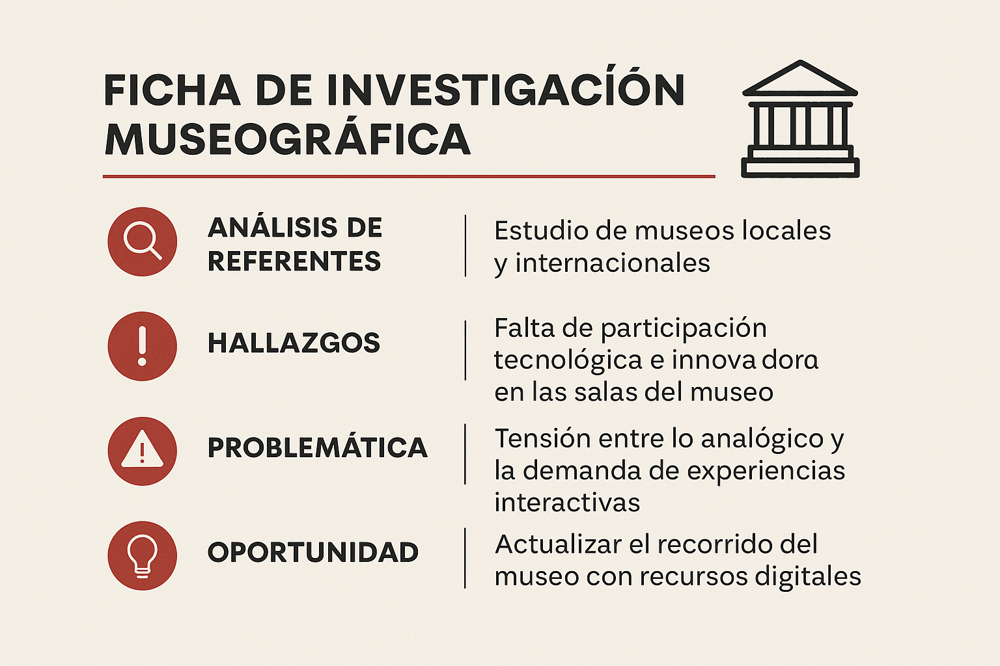

01
Investigación y contexto
Se analizó el flujo de visitantes, tipos de usuarios y necesidades de acceso a la información dentro del museo.

Proyecto de interfaz para un tótem informativo diseñado para espacios culturales. El objetivo fue crear una experiencia clara, accesible y atractiva para distintos perfiles de visitantes.
El trabajo se estructuró en distintas etapas, desde la investigación del contexto hasta la definición del diseño visual final.
Se analizó el flujo de visitantes, tipos de usuarios y necesidades de acceso a la información dentro del museo.
Se definió la arquitectura de la información y se diseñaron wireframes enfocados en recorridos simples e intuitivos.
El diseño final prioriza jerarquía visual clara, iconografía simple y contraste adecuado para distintos públicos.